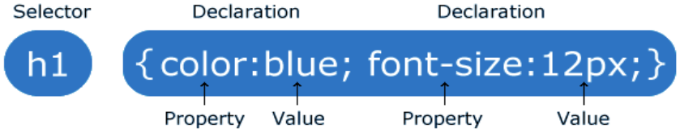

Cascading Style Sheets
Andreas Dranidis
CSS - Cascading Style Sheets
- One of the three core languages of the Web (HTML, CSS, Javascript)
- Invented in 1996 by W3C - became popular after 2000. Latest version: CSS3
- CSS is the presentation language of the Web
-
The ‘Driving’ Problem:
-
What font type and size does <h1>Heading</h1>
generate?
Answer: The default format from the browser -
Early HTML - Override defaults with attributes.
<table border="2" bordercolor="black"> -
Style sheets were added to address these issues.
Specify style to use rather than browser default.
Not have to code styling on every element.
-
What font type and size does <h1>Heading</h1>
generate?
CSS to the Rescue
- Key concept: Separate style from content
- Content is in HTML files
- Formatting information in .css code
-
Link a presentation styling with element(s)
Selectors such as HTML tags, element ids, or through a class -
Define once for multiple pages
DRY principle (Don’t Repeat Yourself)
Pros and Cons of CSS
- Reusability and time saving
- Consistency in design and easy maintenance
- Bandwidth reduction - faster loading time
- Search engine friendly
- Respond to varying screen sizes - multiple device compatibility
- Compatibility - Cross-browser issues
- Complexity and confusion for beginners
Anatomy of a Ruleset

- The selector points to the HTML element you want to style.
- The declaration section assigns rules to the selector. It can have one or more rules separated by semicolons.
- Each declaration has 'a property and value' pair, separated by a colon. A declaration ends with semicolon and the whole block is surrounded by curly brackets.
CSS Properties
There exists so many properties.
MDN Web Docs - Most common CSS referenceMDN Web Docs - Complete CSS reference
Where to add CSS
- External - having the CSS in a separate file. The most common and most useful method
Simple CSS Selectors
- Type selector: (also called tag, name or element). It selects an HTML tag/element.
Advanced CSS Selectors
- Combinator selectors - select elements based on a specific relationship between them
- Pseudo-class selectors - select elements based on a certain state
- Pseudo-elements selectors - select and style a part of an element
- Attribute selectors - select elements based on an attribute or attribute value

CSS Box Model
Each HTML element consists of four elements:
- Content
- The content of the box, where text and images appear
- Padding
- Clears an area around the content. The padding is transparent
- Border
- A border that goes around the padding and content
- Margin
- Clears an area outside the border. The margin is transparent
CSS Specificity
If there are two or more CSS rules that point to the same element, the selector with the highest specificity value will "win", and its style declaration will be applied to that HTML element.
Think of specificity as a score/rank that determines which style declaration are ultimately applied to an element.
Calculating specificity: Start at 0, add 100 for each ID value, add 10 for each class value (or pseudo-class or attribute selector), add 1 for each element selector or pseudo-element.
Note: Inline style gets a specificity value of 1000, and is always
given the highest priority!
Note 2: There is one exception to this rule: if you use the
!important rule, it will even override inline styles!
A: h1 color: red;
B: h1#content color: orange;
C: <h1 id="content" style="color: pink;">Heading</h1>
CSS Frameworks
Bootstrap and friends
In essence, a CSS framework comprises several CSS stylesheets ready for use by web developers and designers. The stylesheets are prepped for use for standard web design functions: setting colors, layout, fonts, navbars, etc.
But is Bootstrap necessary or even suggested for beginners?
- Make sure you really know CSS
- Learn Bootstrap
- Study Bootstrap code, you'll learn some layout foundations and there are actually a lot of interesting tricks
- Use your own CSS (perhaps combined with a bit of Bootstrap)
And always remember...